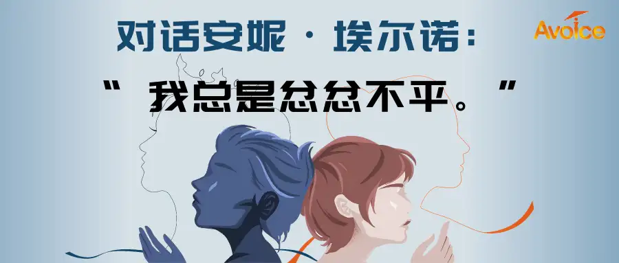
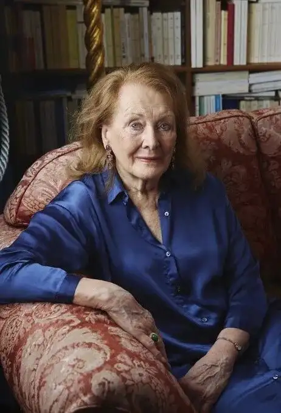
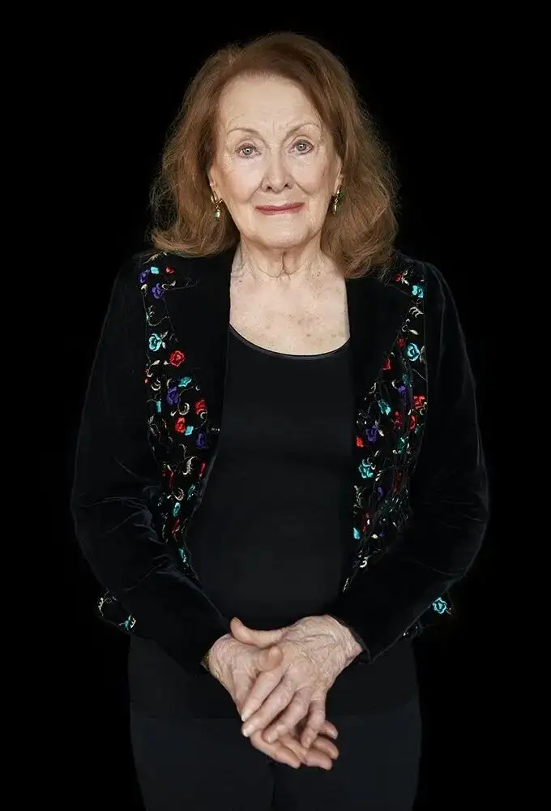

1
引言
2022年10月6日，诺贝尔文学奖颁发给了82岁的法国女作家安妮·埃尔诺。她不仅是过去的斗争的记忆，也是当今社会活动家们的灵感来源——关于性别、社会阶层与平等。为社会的公平而斗争，并反抗对女性的不公，不仅是她写作的两条线索，也是她生活的主线。她相信文学，相信文字有着巨大的力量，就像她在获奖演讲的最后说道，“我要把我作为一个女人和一个跨越了社会阶级的人的声音刻在文学中，而文学永远是一个让人获得自由的地方。”
原稿件来源于法语《嘉人》（Marie Claire）以及《Les Inrockuptibles》杂志。以下文章由Avoice语言支持团队的法语组成员翻译，希望能让更多人通过与安妮的对话，对当今女性面临的困境、文学与现实、一个人在社会世界中的归属等问题有所思考。
自 1974 年以来，2022 年诺贝尔文学奖得主一直在构建一个强而有力的作品体系，将亲密关系、社会正义和妇女权利问题交织在一起。而这在今天引发了跨越国界和代沟的共鸣。
安妮·埃尔诺（Annie Ernaux ）答应了与法国文学评论家 Nelly Kaprièlian 和意大利小说家 Simonetta Greggio见面。后者希望把一位男性朋友的来信交给她。这个朋友通过这张小小的便条让安妮回顾了自己一路的历程，并敏锐而准确地阐述了当今女性面临的问题。
给安妮·埃尔诺的信
“亲爱的朋友，当你告诉我你要去见安妮·埃尔诺的时候，我又想起了她，想起了她对我的意义。我在 15 到 17 岁之间，如饥似渴地看了很多法国18 和 19 世纪的作品、俄罗斯的、西班牙的、南美文学、英国名著、莫夏特（Jean-Patrick Manchette）的侦探小说、欧美戏剧、诗歌、还有总令我厌倦的新小说（Nouveau Roman）。但杜拉斯的作品还是非常优秀的。简而言之，我读了很多东西，甚至对法国20世纪的作品了如指掌。
我那时大概每天看一本书。在我读完安妮·埃尔诺的 《一个男人的位置》（La place）的时候，我才刚认识莫迪亚诺（Patrick Modiano）。她是第一个让我感觉谈论女人时，好像就在谈论我自己一样的人。她的作品非常真诚，描述精确，没有多余的装饰或任何东西，直击我的心底。我把她当作了另一个自我。我当时已经读过一些女性作家的作品，比如波伏娃（Simone de Beauvoir）、伍尔夫（Virginia Woolf）、很吸引我的普拉斯（Sylvia Plath），还有伯恩哈特（Sarah Bernhardt），代博尔德-瓦尔莫（Marceline Desbordes-Valmore）我也喜欢，甚至还读了关于卖淫或吸毒的故事，但我从未这般具有真实性地为女性设身处地过，体会她们所感受的。
这个时候，我开始拥有深厚的女性友谊。我认为埃尔诺帮助我更好地了解了女性。从那以后，我就没有停止过阅读她的作品，因为我总能在她的作品里找到我熟悉的人，用着共同的语言与我交谈，并能与我同频共振。我昨晚想了想。我想在今天早上去上班之前告诉你这些。永远支持你，爱你，丹尼尔（Daniel）。
PS：最后，我想补充一点，她（埃尔诺）更是帮助我了解了自己作为男人的身份。”
文字
Annie Ernaux: 这些文字很让我感动；即便是由一位男士写的，这同样让我感动。正是《单纯的激情》（Passion simple）这本用第一人称创作的书让我获得了所有这些读者的青睐，其中男性读者和女性读者一样多。而一些其他的书籍，比如写秘密堕胎这种女性身体体验的《记忆无非彻底看透的一切》（L’événement），男性读者则需要更多的时间去理解。
读过这些书的男性都会被书中的内容所震撼到。我记得曾有一位加拿大读者对我说：“我读了您的书，我出生于您堕胎的那一年，这对我来说很可怕，因为我觉得我可能会因为堕胎而无法出生。”我却跟他说这世上有很多胎儿都无法出生，而这是一件再自然不过的事情。
他被这些文字吓到了，因为男性至今都根本不了解堕胎是怎样的过程，他们对此一无所知。即便今天的女性开始更多地去谈论她们自己，谈论经期、绝经，还是会有许多沉默，许多对于女性的禁令。人工流产便是其中一项。而从2000年开始，我认为这种情况正在逐渐向好的方向改变。
“我们常常拥有言论自由，尤其是在文学作品里。
但对于女性来说，帮助微乎其微。”
我很喜欢2000年时20岁，如今正值40岁的那一代女生。在这些年里，我感受到了她们的思想，以及对于男生的态度发生了改变。她们对于平等的渴望更加强烈了。她们对男性的惯例提出了质疑。我指的是任何一件小事，比如被邀请去餐厅吃饭一定会付自己的那份钱，又比如不做任何交代，也不接受任何打扰地出去玩。就和那些请愿的妇女说的一样，你还记得吗？
【2018年1月9日刊的《世界报》专栏中报道，一百名女性聚集，采用反女权主义的策略故意嘲讽男性对女性造成的身心伤害。她们的口号是：“我们捍卫纠缠的自由，这对性自由必不可少。”原编者注】

* 夏洛特·阿布拉莫（Charlotte Abramow）为《嘉人》杂志拍摄的安妮·埃尔诺在家中的照片
Simonneta Greggio: 您为女性自由贡献了很多力量，这不仅仅是从言论上而言的。
Annie Ernaux: 我不喜欢言论自由这个词，因为如果只有自由的言论，那一定走不远，而且我们的言论常常是自由的，尤其是在文学作品中，但这并不能为女性改变什么。
Simonneta Greggio: 但您参与了这种问题的讨论，您的言论对这些问题表了态，您的文字就是一种行动。当您写作的时候，您是否会有一种积极的、希望改变这一切的想法？
Annie Ernaux: 女孩子们无法拥有像男孩子们一样的权利，这给我早年的生活蒙上了一层阴影。她们被父系制的条条框框所压迫，这种父系制充斥在社会当中。在我二十几岁的时候，长话短说，要么结婚，要么堕胎。
在1974年，我出版了我的第一本小说《空衣橱》（Les Armoires vides）。从那之后，我在两个维度中不断拓展，一个是社会问题，一个是女权主义。为社会的公平而斗争，并反抗对女性的不公。这是我写作的两条线索，更加困难的是，这同样也是我生活的两条线索。 但是，我可以告诉你，对于我的生活来说，这两条线索会更加复杂。
【安妮笑了。有些笑代表歉意，安妮的这一笑，不是。她活泼的笑声，自由而调皮，就和她这个人一样。这种笑，它以某种方式预示着，支撑着她将要说的话；它煽动着，让观众们感受到一种独有的讽刺。】
Nelly Kaprièlien: 在《悠悠岁月》（Les Années）的最后，您说您把这本书当作是反抗的工具。为谁而争斗，为了什么而反抗？
Annie Ernaux:反抗社会的不平等，维护女性的权益，对于我来说这两个事情是有联系的。总的来说就是对抗不公平。 这和我的政治观念有关，而我的政治观念不常改变。在成长过程中，我们最初所处的世界中的所有事情对我们选择的文学学习路线是决定性的。布尔迪厄曾经说过：文学是一种惯习（habitus）同一个文学领域的交汇。我觉得他说的话实在是太准确了。比如我的惯习就是大众化的、女权主义的。在我20岁写作的时候，我只是和文学领域建立了联系，至于我的惯习，我还没有抓住它。那是在1960年，当时我被新小说思潮所影响。从那之后，当我写作的时候，我的认知，对我身处的位置以及我的出身的认知，被完全限定在那个文学框架里了。 到了1970年，女性取得了话语权。这太重要了，因为我取得了话语权，我谈论了堕胎，还谈论了我想谈论，但在文学中并没有留下痕迹的事情：社会的撕裂。我出生于社会下层，却受到了高等教育。一开始我用愤怒的语气写作，因为我的反抗是真实的。我不会放弃反抗，但我不会再用同样的语气去写作了。这种改变开始于《一个男人的位置》这本书，在这本书中我不再写我自己的事情转而去写我父亲。我不再用愤怒的语气，因为愤怒会很快产生一种民粹主义，悲惨主义，以及抱怨主义。
“曾经这种抗争的激烈持续过一段时间。
我是一个双重不幸的人：
作为女性我是凄惨的，作为社会的叛徒我更是痛苦的。”
男性
Simonneta Greggio : 自从小说《悠悠岁月》发表，您终于为大众所知了。
Annie Ernaux : 您的意思是被人认可了吧。
Simonneta Greggio： 是的，认可。2020年，您入围了布克奖（一项在英国颁发的国际文学奖）的决赛。1984年您凭借《一个男人的位置》荣获了勒诺多文学奖（法国重要文学奖）。除了这两个奖项，大众对您所获得的其他奖项所知甚少。当时有的新闻媒体对您的描述是具有贬义性的。我一直以为像莫迪亚诺或勒克莱齐奥一样的作者从来不会在认可度方面遇到任何问题。
Annie Ernaux：我是一名女性。然而我们不得不承认，女性在社会上的认可度比男性的低得多，无论在哪个领域都一样。文学以及其他领域都由男性主导。
不管是文学评论家，评审团成员，编辑，还是大老板，男性占的比例确实更高。这些男人们真是一群大嘴巴......你知道的，我曾经被恶语中伤过。就连科莱特和波伏娃等大作家也没能逃过性别歧视的辱骂。在 90 年代，我经历了很多（辱骂），尤其是对于《单纯的激情》、《耻辱》和《外部日记》。
Simonneta Greggio：他们批评了您什么？
Annie Ernaux： 这很复杂。我从来没有向这个看轻我的世界做出让步。没有任何让步。有的奖项我甚至拒绝了。像《一个男人的位置》这样的文本产生了巨大的影响，尽管很多人认为它是 1930 年代的大众文学，最终我还是凭借这本书获得了勒诺多奖，让很多人感到愤愤不平。
“我受到了社会蔑视以及性别歧视。”
当我发表《单纯的激情》时，他们向我发起了攻击，且一发不可收拾。我被称为“卵巢”夫人。铺天盖地的讽刺性评论向我涌来，说我是工会的作家，为打字员写书。
我受到了社会的蔑视——和基于性别的歧视。 发表《悠悠岁月》时情况有所好转，但只是假象，嘲讽很快回归本位。《看看这些光吧，亲爱的》让观众再次对我这个女作家有所好奇：她又想做什么，想在超市里写出文学作品？讲述那些从未谋面的陌生人的故事？但很快，我又被称为RER圣母了。

* 夏洛特·阿布拉莫（Charlotte Abramow）为《嘉人》杂志拍摄的安妮·埃尔诺的照片
女性
Simonneta Greggio: 这些批评没有使您生气，反而给您带来了更多的能量。
Annie Ernaux: 的确，我没有生气。我尽量保持理性去分析这些事情。我依旧生活得很好，并且我会去反抗：反抗种族主义，反抗性别主义，反抗各种不公。反抗，这是我喜欢的词。我不能做到不说话。在我的一个记事本上写着这样一句话：“我将为我的种族发声而写作。”
Simonneta Greggio: 您的种族是什么？
Annie Ernaux: 这个说法出自兰波，他说：“我永远属于劣等种族。”我挪用了这个词。种族，其实指的是我的社会出身。
Simonneta Greggio: 您真的认为写作能够带来一些改变，能够动摇任何东西吗？
Annie Ernaux: 有些电影是根据我的作品改编的，我的书在大学里被用作研究素材。当人们读《被冻结的女人》（La femme gelée），他们的观念会被动摇，即使这是一本40年前的书。这本书讲述了一对夫妇被性别平等的理想主义赋予活力，又被社会的传统观念所束缚的故事。所以， 我相信写作可以改变一些事情。文字有着巨大的力量，有时甚至可以毁灭一些东西。
Nelly Kaprièlien: 您怎样看待美国MeToo反性骚扰运动？
Annie Ernaux: 它唤醒了属于70年代的女权主义。在90年代，女权主义经历了完全的倒退。当然，这个运动出现了背离最初主旨的滥用问题，但这很奇怪，我们一直要求被统治者应该是完美的。就像在黄马甲运动中，小小的一点闪失——他们确实犯了这样的错误—都会立马变成：“他们都是反犹分子”，或者“他们都是仇视伊斯兰教分子”。
“如今，反抗来自那些受到深刻不公的人，来自那些没有未来的人。
我认为这种情况将会持续。我也会继续去支持这些人。”
事物
现在您有想对男性说的话吗？
女性获得同男性平等的地位，对男性百利而无一害。
对女性呢？
绝不得过且过。
男人和女人之间会发生什么呢？
在男人和女人之间，斗争就是生活，生活就是斗争。
您有哪些梦想是已经实现了的？
在过去里，梦想是不存在的。
在这一切中是否存在着一种希望，这种希望是什么？
我称之为黎明前的曙光。
安妮，如今对您来说，什么是自由?
我说出来会让你感到不高兴的。
我们在这里不是为了这个。
我只需要去写作，没有必要去回答所有的这些问题。
原文链接：
https://www.marieclaire.fr/annie-ernaux-interview-sexisme-feminisme-ivg-metoo-romans,1371731.asp
https://www.lesinrocks.com/livres/lecriture-les-femmes-les-gilets-jaunes-entretien-avec-annie-ernaux-154065-21-05-2019/
翻译 I Wanxin Hu、Ylies、Hanbo Wang
审校 I Chudi、Yang Haining Seveline
排版/封面 I Minxin LI